$ cd examples/hello $ ant
In this section, we will go through the steps to download and install JWt, and deploy and run the examples that come bundled with it. We will detail the procedure for the ubiquitious Hello world example, but you can follow the same steps for each of the examples.
|
Tip
|
The examples that come with the library are each a self-contained project which only require the JWt library (and its dependencies) to get going. You could structure your own projects in the same way as each of these example projects, but it is up to you: the library does not enforce a particular layout of your web application, it simply acts as a library (rather than a framework). |
We present two tracks for running your first JWt application: from within the Eclipse IDE or from the command line. You will need to download the JWt source distribution (TODO see url jwt) which contains the library and its dependencies, as well as all the examples:
-
jwt-src-3.0.0.zip (Windows platforms).
-
jwt-src-3.0.0.tgz (Unix and Unix-alikes).
2.1. Hello world from within Eclipse
The library and all of the examples include a .project file which is used by Eclipse to manage the build process. For deploying the web application during development, we recommend using the run-jetty-run plugin.
2.1.1. Requirements
To run the Hello world example with Eclipse you will need to install the following softwares:
-
Java Standard Edition Development Kit (version 5.0 or later) from http://java.sun.com/javase/downloads/
-
Eclipse IDE (Java/JEE Edition 3.4.2 or later) from http://www.eclipse.org/downloads/
-
run-jetty-run plugin (1.1.1 or later) from http://code.google.com/p/run-jetty-run/
2.1.2. Importing into Eclipse
-
Extract the JWt source distribution to a directory on your system.
-
Start Eclipse.
-
Right-click inside your Project Explorer and select Import → Import….

-
Select General → Existing Projects into Workspace and click Next.
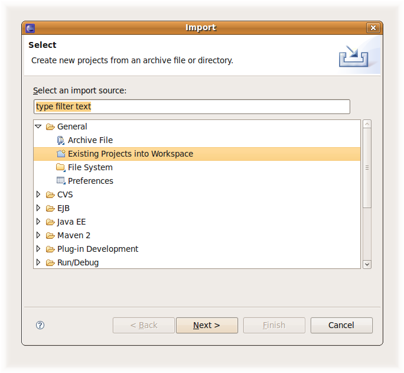
-
Click Browse.
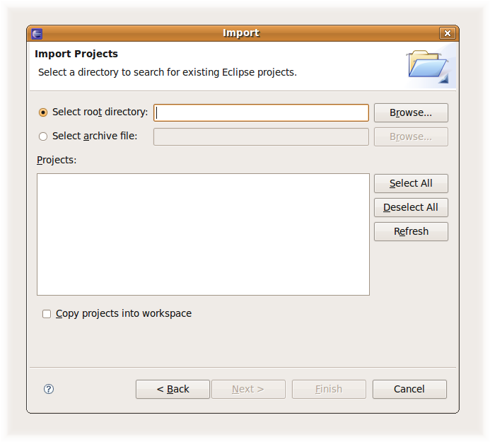
-
Navigate to the directory where the JWt source distribution was extracted to. Select the examples/hello directory and click OK.
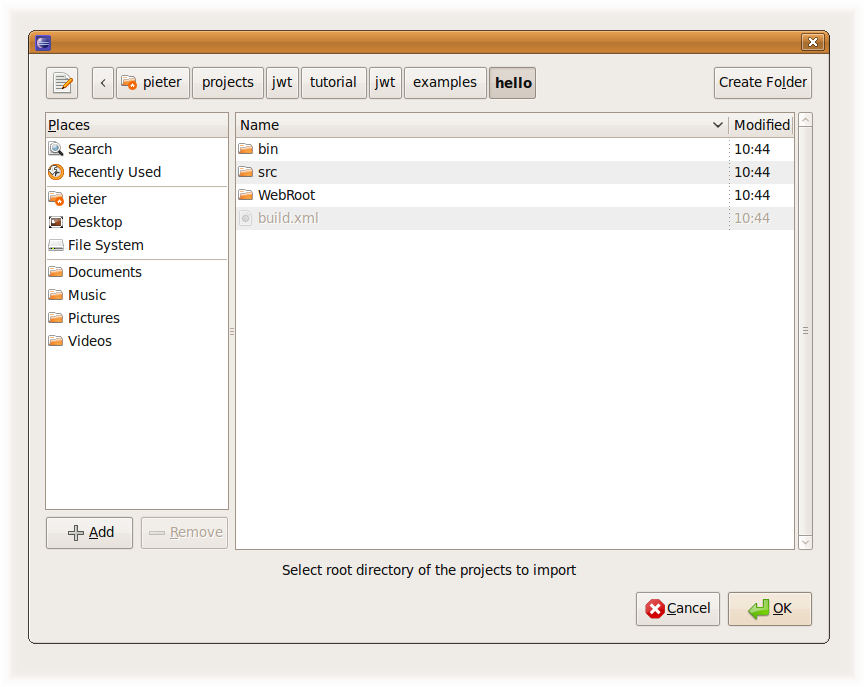
TipYou can import multiple examples at once by selecting the examples directory instead, and selecting multiple projects in the next step. -
The hello project will be visible and selected, click Finish.
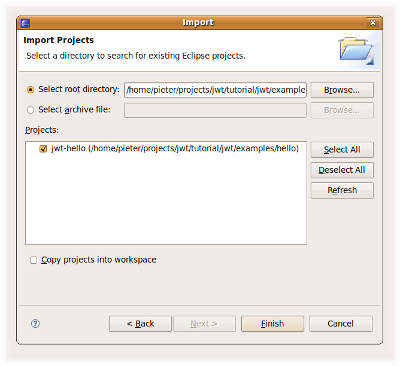
-
The imported jwt-hello project becomes visible in the Project Explorer tree.
There are however still build errors as the JWt library and dependencies are still missing.

-
We have provided an ant build script that copies the JWt library and dependencies in the lib folder and also builds a war file.
Right-click on the build.xml, Run As → Ant Build. When this is your first example, the build script will also build the JWt library itself.
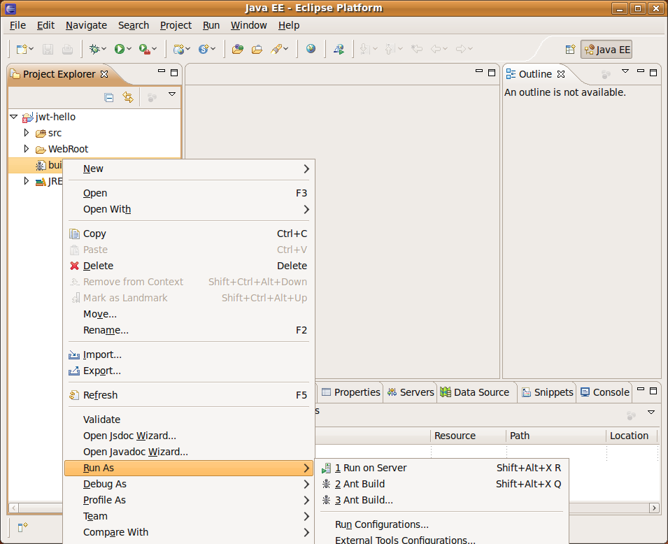
-
Refresh your jwt-hello project. The example is now built and ready to be run.
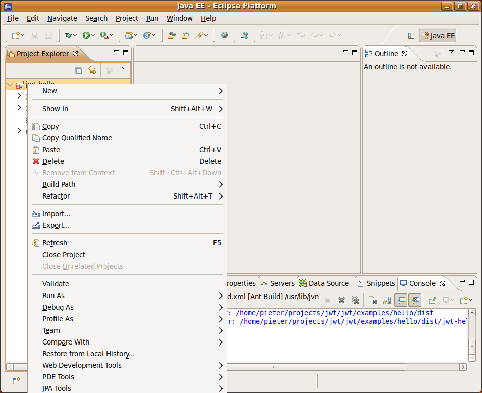
2.1.3. Running
Below, we use the run-jetty-run plugin. You may also use any other JEE application server (with integration in Eclipse) to which you deploy the dist/jwt-hello-3.0.0.war file which has also been built by the ant tool.
-
Open the Run → Run Configurations… dialog.
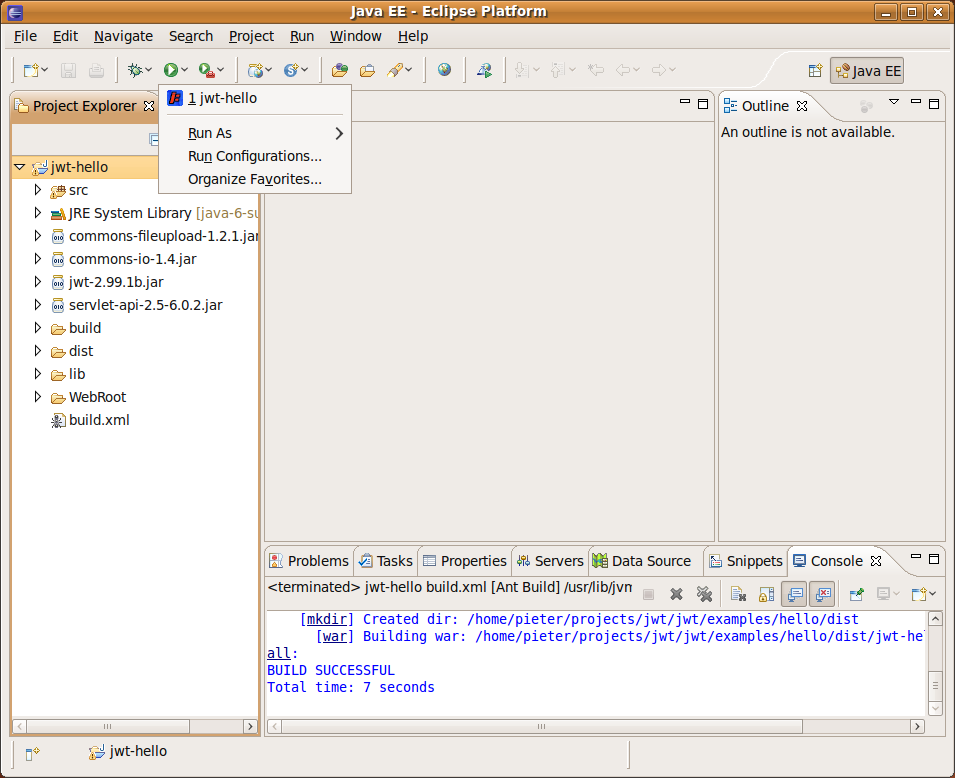
-
Create a new Jetty Webapp.
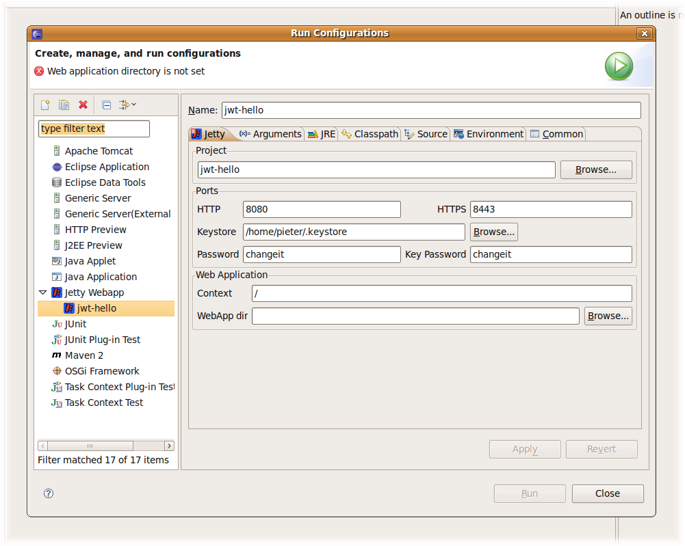
-
Since this example does not require HTTPS, remove the HTTPS port value in the Ports section. Removing this value will disable all other HTTPS related settings.
Click on the Browse… button in the Web Application section and select the WebRoot folder.
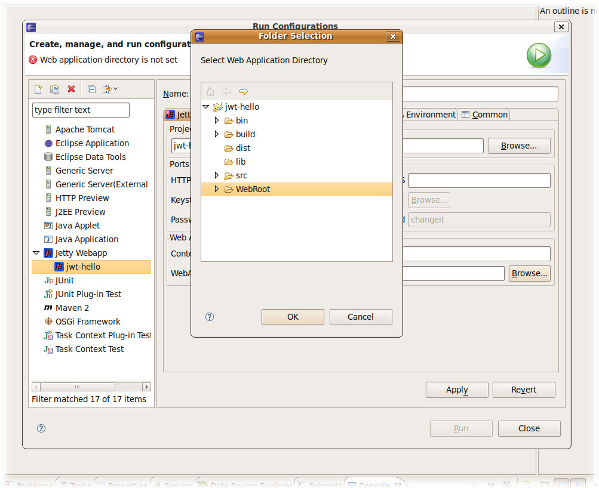
-
Click Run (your configuration settings will be saved).
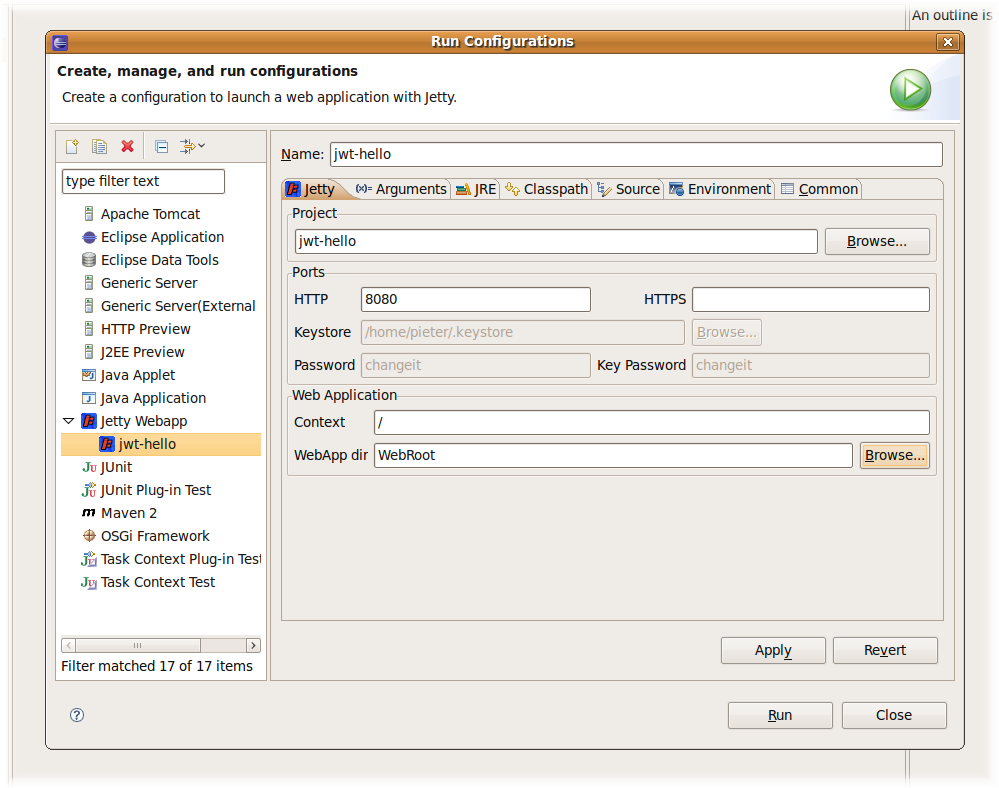
-
(After some disk grinding — tada!) the servlet container is started listening on port 8080
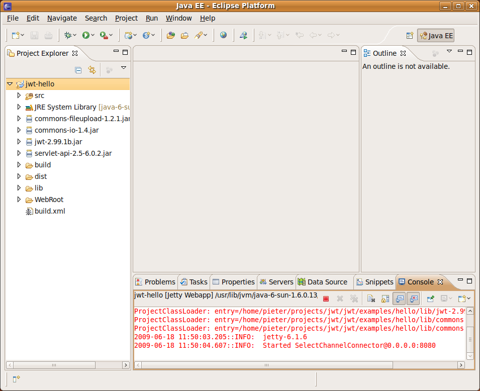
-
Open your web browser and point it to http://localhost:8080/.

2.2. Hello World on the command line with Ant
To build the library and examples, we will be using ant, and for deployemt we will use the light-weight Jetty servlet container.
2.2.1. Requirements
To run the Hello world example from the command line you will need to install the following softwares:
-
Java Standard Edition Development Kit (version 5.0 or later) from http://java.sun.com/javase/downloads/
-
Ant (version 1.7.1 or later) from http://ant.apache.org/
-
Jetty (version 6.1.18 or later) from http://www.mortbay.org/jetty/ (in the end, any servlet container or application server will do, these instructions however assume Jetty)
2.2.2. Building
-
Open you command line console.
-
Extract the JWt source distribution to a directory on your system, and navigate to this directory.
-
Enter the examples/hello directory and run ant:
This will build dist/jwt-hello-2.99.1b.war, handling all of the dependencies including JWt itself.
2.2.3. Running
-
Copy the jwt-hello-2.99.1b.war to jetty-install-dir/webapps/hello.war.
-
Start Jetty:
-
On Unix: jetty-install-dir/bin/jetty.sh start
-
On Windows: java -jar jetty-install-dir\start.jar
-
-
Open your preferred web browser and navigate to http://localhost:8080/hello/.

2.3. A closer look at a JWt web application project structure
A JWt project is a setup does not involve much, since JWt acts as a Java library (on top of the Java servlet API). After running ant in the JWt source distrubition folder, all required jar files can be found in the jwt-src-3.0.0/dist folder. To use JWt in your project, you need only to include these 4 jar files into your project library path.
The start point of your application is defined by extending WtServlet which implements a Java servlet, and provides an entry point to a JWt application. An example of this is eu.webtoolkit.jwt.examples.hello.HelloMain.
To deploy the web application you need to provide a WebRoot/web.xml configuration file which binds the servlet to a context path: